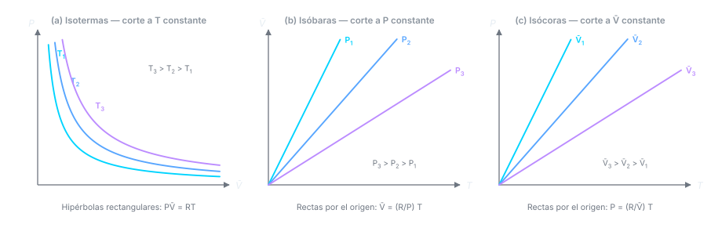

Clase 1: Gas Ideal, Leyes Empíricas y Ley de Dalton
El estado gaseoso descrito por cuatro propiedades, las leyes empíricas de Boyle y Charles que se condensan en , y la extensión a mezclas mediante las presiones parciales de Dalton.
Temas que cubre
- Estados de la materia y por qué el gaseoso es el más simple de describir: masa, , y bastan
- Ecuación de estado: propiedades extensivas (, ) vs. intensivas (, , )
- Ley de Boyle (1662): a y masa constantes
- Ley de Charles y Gay-Lussac: lineal en , coeficiente de expansión térmica
- Ley de Avogadro: a y fijas, — volúmenes iguales contienen igual número de moléculas
- Cómo (igual para todos los gases) define la escala termodinámica de temperatura
- La constante y sus condiciones estándar ( L/mol, K, 1 atm)
- Diagramas del gas ideal: isotermas, isóbaras e isócoras
- Variables de composición: fracción molar como razón de dos extensivas
- Ley de Dalton de las presiones parciales y su comprobación experimental (membrana de Pd)
- Ley de distribución barométrica: el efecto de la gravedad sobre un fluido
Conceptos clave
Ecuación de estado
Una relación que amarra , , y : fijando dos variables intensivas, la tercera queda determinada. Por eso todos los estados posibles de un gas ideal caben en un solo diagrama.
Extensiva vs. intensiva
Extensiva (, , ): su valor total se obtiene sumando sobre todo el sistema y es proporcional a la masa. Intensiva (, , ): tiene el mismo valor en cualquier parte del sistema. La razón entre dos extensivas es intensiva.
Ley de Avogadro
A y fijas el volumen sólo depende de cuántas moléculas hay, no de cuáles. Es la pieza que le faltaba a Boyle y Charles: sin ella la constante de dependería del gas, y no habría un universal.
Coeficiente
El aumento relativo de volumen por grado a C, medido a constante. Su gran descubrimiento: es el mismo para todos los gases y casi independiente de . Eso permite construir una escala de temperatura que no depende de la sustancia usada.
Temperatura termodinámica
Definir convierte en : el volumen pasa a ser directamente proporcional a . Con , se obtiene la escala Kelvin.
Presión parcial
La presión que ejercería un gas de la mezcla si estuviera solo en el mismo volumen a la misma . En un gas ideal las moléculas no se ven entre sí, así que cada gas actúa como si los demás no existieran.
Volumen molar
es intensiva: permite analizar principios sin arrastrar la masa del sistema. Para dimensionar equipos reales en ingeniería hay que volver a las extensivas.
Fórmulas fundamentales





Qué hay que entender
- no es un postulado: es el resumen de dos observaciones experimentales independientes (Boyle y Charles) más la constatación de que es universal.
- La escala Kelvin no se "inventó": aparece sola al pedir que . El es medido.
- Las tres leyes empíricas se combinan de una sola manera: (Boyle), (Charles) y (Avogadro) dan , y la constante de proporcionalidad es .
- Distinguir extensiva de intensiva es lo que después permite definir propiedades molares y, más adelante, potenciales químicos.
- La ley de Dalton es una consecuencia de la idealidad: las moléculas no interactúan, así que cada gas "no ve" a los demás. En gases reales deja de cumplirse.
- Ojo con : elegir la versión equivocada ( vs. ) es el error más común en los ejercicios. Que las unidades de , y calcen con las de .
- La barométrica se deduce, no se memoriza: balance de fuerzas + gas ideal + constante.